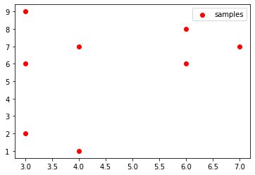
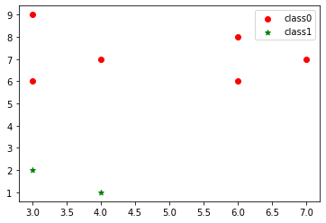
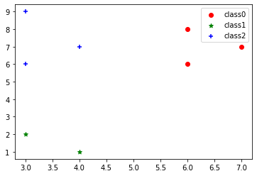
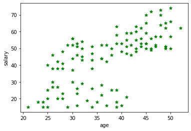
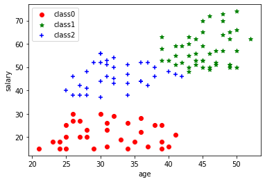
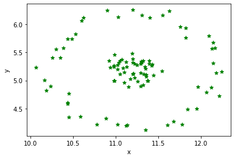
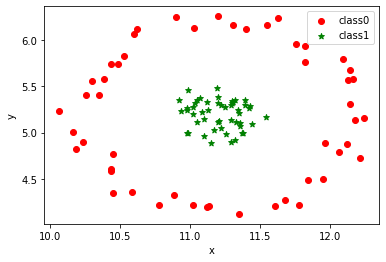
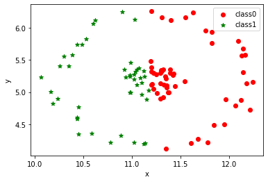
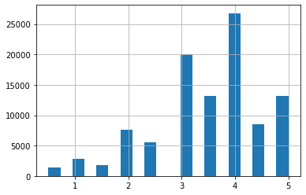

13 数据聚类与分群分析
机器学习可以分为监督学习和无监督学习两大类，其中非监督学习的数据集只有特征变量，而没有目标变量，我们需要对已有的数据进行建模，根据性质及进行分组。其典型案例是聚类分析问题，例如根据信用卡申请人进行分类（客户分群），根据新闻标题和内容对新闻进行分类等。
13.1 KMeans算法
13.1.1 KMeans算法的基本原理
KMeans算法名称中的K代表类别数量，Means代表每个类别内样本的均值，所以又称为K-均值算法。KMeans算法以距离作为样本间相似度的度量标准，将距离相近的样本分配至同一个类别。样本间距离的计算方式可以是欧式距离、曼哈顿距离、余弦相似度等，KMeans算法通常采用欧式距离来度量各样本间的距离
KMeans算法的核心思想是对每个样本点计算到各个中心点的距离，并将该样本点分配给距离最近的中心点代表的类别，一次迭代完成后，根据聚类结果更新每个类别的中心点，然后重复之前操作再次迭代，直到前后两次分类结果没有差别。（下图目的是将8各样本点聚成3各类别K=3）
13.1.2 KMeans算法的代码实现
1.构造数据
1 | import numpy as np |
1 | data |
array([[3, 2],
[4, 1],
[3, 6],
[4, 7],
[3, 9],
[6, 8],
[6, 6],
[7, 7]])
2.可视化展示
1 | import matplotlib.pyplot as plt |

第二行代码：data是用numpy库构造的，所以data[:,0]表示两列数的第一列数（第一个元素表示行，冒号表示所有行；第二个元素表示列，0表示第一列），即x坐标，同理，data[:,1]表示y坐标
3.KMeans聚类（聚类成2类）
1 | from sklearn.cluster import KMeans |
4.获取结果
1 | label = kms.labels_ # 通过模型的labels_属性获取聚类结果 |
[1 1 0 0 0 0 0 0]
结果表示原数据中前两个数据聚为一类，其他数据聚为另一类
5.结果可视化
1 | plt.scatter(data[label == 0][:, 0], data[label == 0][:, 1], c="red", marker='o', label='class0') # 以红色圆圈样式绘制散点图并加上标签 |
<matplotlib.legend.Legend at 0x19db372cf10>

6.聚类成3类，并可视化呈现
1 | kms_3 = KMeans(n_clusters=3) |
[1 1 2 2 2 0 0 0]
1 | plt.scatter(data[label_3 == 0][:, 0], data[label_3 == 0][:, 1], c="red", marker='o', label='class0') # 以红色圆圈样式绘制散点图并加上标签 |
<matplotlib.legend.Legend at 0x19db39903a0>

说明：因为KMeans算法的初始中心点是随机选取的，所以如果样本数据量比较大，可能会导致每次运行代码得到的聚类结果略有不同，如果希望每次运行的代码得到的聚类结果相同，可以在模型中传入random_state参数，
1 | # kms = KMeans(n_clusters=3,random_state=123) |
13.1.3 案例实战：银行客户分群模型
1.案例背景
银行拥有海量的客户，对于不同的客户，银行需要采取不同的营销工作策略。例如，对于收入高且风险承受能力强的客户，可以重点挖掘业务机会，如向其推销一些收益率高但周期相对较长的理财产品；对于收入低且风险承受能力较弱的客户，则需要采取其他策略，因此，银行通常需要将客户进行分群处理，以便有的放矢地开展营销工作
2.读取银行客户数据
1 | import pandas as pd |
| 年龄(岁) | 收入(万元) | |
|---|---|---|
| 0 | 50 | 66 |
| 1 | 44 | 51 |
| 2 | 30 | 56 |
| 3 | 46 | 50 |
| 4 | 32 | 50 |
1 | import matplotlib.pyplot as plt |

可以看出，年龄越大的人收入相对越高，符合认知
3.模型搭建与使用
1 | from sklearn.cluster import KMeans |
[1 1 2 1 2 2 1 2 2 1 1 1 1 2 1 1 1 2 1 1 1 2 2 1 1 1 1 2 2 1 2 1 2 2 2 0 2
1 2 0 1 1 2 1 2 1 2 1 1 2 2 0 1 2 1 1 1 1 2 1 2 2 2 2 0 0 0 0 0 0 0 0 0 0
0 0 0 0 0 0 0 0 0 0 0 0 0 1 1 1 1 1 1 1 1 2 2 2 2 1 1 1 2 1 2 0 0 0 0 0 0
2]
1 | plt.scatter(data[label == 0].iloc[:, 0], data[label == 0].iloc[:, 1], c="red", marker='o', label='class0') # 以红色圆圈样式绘制散点图并加上标签 |
<matplotlib.legend.Legend at 0x19db375bf70>

在上图中，class1代表的这部分客户年龄为40-50岁，平均收入58万元，可以视为重点客户，是需要重点营销和推广的对象；class2代表的这部分客户年龄为25-42岁，平均收入46万元，可以视为优质客户，是需要精心维护和营销的对象；class0代表的这部分客户年龄为20-40岁，平均收入21万元，可以视为潜力客户，是需要耐心挖掘和等待都对象
补充知识点，查看各标签人的收入均值
1 | print(data[label == 0].iloc[:, 1].mean()) # 看下分类为标签0的人的收入均值，iloc[:, 1]为data表格的第二列，也即“收入”列 |
21.125
57.55555555555556
46.285714285714285
13.2 DBSCAN算法
DBCAN（Density-Based Apatial Clustering of Applications with Noise）是一种以密度为基础的空间聚类算法，可以用密度的概念剔除不属于任一类别的噪声点。该算法将簇定义为密度相连的点的最大集合，将具有足够密度的区域划分为簇，并可以发现任意形状的簇
13.2.1 DBSCAN算法的基本原理

.png)
可视化网站：https://www.naftaliharris.com/blog/visualizing-dbscan-clustering/
13.2.2 DBSCAN算法的代码实现
1.读取数据
1 | import pandas as pd |
| x | y | |
|---|---|---|
| 0 | 10.44 | 5.74 |
| 1 | 11.55 | 6.16 |
| 2 | 11.36 | 5.10 |
| 3 | 10.62 | 6.12 |
| 4 | 11.20 | 5.39 |
2.数据可视化
1 | import matplotlib.pyplot as plt |

3.数据建模/4.查看聚类结果
1 | from sklearn.cluster import DBSCAN |
[0 0 1 0 1 0 1 1 0 0 0 0 1 0 0 0 0 0 0 1 1 0 1 1 1 1 0 1 1 0 1 1 0 1 1 1 0
1 0 0 0 1 0 1 0 1 0 0 1 0 1 0 0 1 0 0 0 1 1 1 0 1 1 0 0 0 0 0 1 1 0 0 0 1
1 1 1 1 1 0 1 0 0 1 0 0 1 0 1 1 1 1 0 1 1 1 0 1 1 0]
1 | # DBSCAN? # 如果想查看DBSCAN的官方说明，可以在其DBSCAN后面加上?进行查看 |
5.用散点图展示DBSCAN算法的聚类结果
1 | plt.scatter(data[label_dbs == 0].iloc[:, 0], data[label_dbs == 0].iloc[:, 1], c="red", marker='o', label='class0') # 以红色圆圈样式绘制散点图并加上标签 |
<matplotlib.legend.Legend at 0x19db4f3e1f0>

13.2.3 KMeans算法与DBSCAN算法的对比
1 | from sklearn.cluster import KMeans |
1 | # KMs # 这样可以查看模型参数，这里没有设置random_state参数，所以可能每次跑出来的结果略有不同（因为每次起始点选的地方不同） |
1 | print(label_kms) |
[1 0 0 1 0 1 0 0 0 0 0 0 0 1 0 1 1 1 1 0 0 0 1 1 1 0 0 1 1 1 0 0 1 1 0 1 1
0 0 0 0 1 0 0 1 0 1 0 0 1 1 0 1 0 1 1 1 0 1 1 1 1 1 1 0 0 0 1 0 1 0 0 1 0
1 0 1 1 1 1 0 0 0 0 1 0 0 1 0 0 0 0 0 0 1 0 0 1 0 0]
1 | plt.scatter(data[label_kms == 0].iloc[:, 0], data[label_kms == 0].iloc[:, 1], c="red", marker='o', label='class0') # 以红色圆圈样式绘制散点图并加上标签 |
<matplotlib.legend.Legend at 0x19db4d20df0>

可以看到，对于形状类似同心圆的数据，KMeans算法聚类效果较差，只能机械地将数据分为左右两部分，而无法以外圆内圆的方式进行区分。
.png)
13.3 案例实战：新闻聚类分群模型
13.3.1 案例背景
新闻种类复杂多样，财经、体育、科技、娱乐等等，在本案例中，笔者根据关键词从百度新闻爬取了962条新闻，且每个关键词对应的新闻条数接近，现在需要对每条新闻划分类别，匹配到正确的版面
13.3.2 文本数据的读取与处理
1.读取数据
1 | import pandas as pd |
| 关键词 | 标题 | 网址 | 来源 | 时间 | |
|---|---|---|---|---|---|
| 0 | 华能信托 | 信托公司2019年上半年经营业绩概览 | http://www.financialnews.com.cn/jrsb_m/xt/zx/2... | 中国金融新闻网 | 2019年07月23日 00:00 |
| 1 | 华能信托 | 首单信托型企业ABS获批 | http://www.jjckb.cn/2018-10/23/c_137552198.htm | 经济参考网 | 2018年10月23日 12:21 |
| 2 | 华能信托 | 华能贵诚信托孙磊:金融科技助力打造开放信托生态 | https://baijiahao.baidu.com/s?id=1639276579449... | 同花顺财经 | 2019年07月17日 10:49 |
| 3 | 华能信托 | 华能贵诚信托孙磊:金融科技已经成为信托行业重要的基础设施 | https://finance.qq.com/a/20190716/007898.htm | 腾讯财经 | 2019年07月16日 18:53 |
| 4 | 华能信托 | 格力电器股权转让意向方闭门开会 华能信托赫然在列 | https://finance.sina.com.cn/trust/roll/2019-05... | 新浪 | 2019年05月22日 22:53 |
1 | df.shape |
(962, 5)
2.中文分词
1 | # 中文分词演示 |
我
爱
北京
天安门
1 | # 第一条新闻标题 |
'信托公司2019年上半年经营业绩概览'
1 | # 第一条新闻标题中文分词 |
信托公司 2019 年 上半年 经营 业绩 概览
1 | # 通过for循环遍历来进行所有标题的分词 |
第三行代码创建一个空列表words来存储每一条新闻标题的分词结果。第四行代码通过for循环遍历整张表格，其中iterrows()是pandas库遍历表格每一行的方法，i对应每一行的行号，row对应每一行的内容。5，6行代码对每一条新闻标题进行分词，并将各个分词用空格连接在一起，roe[‘标题’]表示这一行的“标题”列的内容。第七行代码用append()函数将每一条新闻标题的分词结果添加到works列表中
1 | words[0:3] # 展示前三条新闻的分词结果 |
['信托公司 2019 年 上半年 经营 业绩 概览',
'首单 信托 型 企业 ABS 获批',
'华能 贵 诚信 托孙磊 : 金融 科技 助力 打造 开放 信托 生态']
1 | # 熟悉了上面的过程后，可以把代码合并写成如下形式 |
1 | words[0:3] # 同样展示前三条新闻的分词结果 |
['信托公司 2019 年 上半年 经营 业绩 概览',
'首单 信托 型 企业 ABS 获批',
'华能 贵 诚信 托孙磊 : 金融 科技 助力 打造 开放 信托 生态']
补充知识点：遍历DataFrame表格的函数 - iterrows()函数
pandas库中的iterrows()函数用于遍历DataFrame的每一行
1 | for i, row in df.iterrows(): |
0
关键词 华能信托
标题 信托公司2019年上半年经营业绩概览
网址 http://www.financialnews.com.cn/jrsb_m/xt/zx/2...
来源 中国金融新闻网
时间 2019年07月23日 00:00
Name: 0, dtype: object
1
关键词 华能信托
标题 首单信托型企业ABS获批
网址 http://www.jjckb.cn/2018-10/23/c_137552198.htm
来源 经济参考网
时间 2018年10月23日 12:21
Name: 1, dtype: object
2
关键词 华能信托
标题 华能贵诚信托孙磊:金融科技助力打造开放信托生态
网址 https://baijiahao.baidu.com/s?id=1639276579449...
来源 同花顺财经
时间 2019年07月17日 10:49
Name: 2, dtype: object
3
关键词 华能信托
标题 华能贵诚信托孙磊:金融科技已经成为信托行业重要的基础设施
网址 https://finance.qq.com/a/20190716/007898.htm
来源 腾讯财经
时间 2019年07月16日 18:53
Name: 3, dtype: object
4
关键词 华能信托
标题 格力电器股权转让意向方闭门开会 华能信托赫然在列
网址 https://finance.sina.com.cn/trust/roll/2019-05...
来源 新浪
时间 2019年05月22日 22:53
Name: 4, dtype: object
5
关键词 华能信托
标题 直击格力电器意向投资者见面会:参会者华能信托背后现国务院国资委...
网址 http://finance.ifeng.com/c/7mt651IB1rX
来源 凤凰网
时间 2019年05月22日 18:24
Name: 5, dtype: object
6
关键词 华能信托
标题 格力电器股权转让意向投资者见面会召开 自称华能信托的人士到场
网址 http://finance.ifeng.com/c/7msujqm5Mcr
来源 凤凰网
时间 2019年05月22日 15:42
Name: 6, dtype: object
7
关键词 华能信托
标题 2018年信托业人均创利304万元 华润、华能贵诚跌出万亿俱乐部
网址 http://finance.eastmoney.com/a/201905121120104...
来源 东方财富网
时间 2019年05月12日 16:00
Name: 7, dtype: object
8
关键词 华能信托
标题 去年信托业人均创利304万元,华能贵诚信托跌出万亿俱乐部
网址 https://baijiahao.baidu.com/s?id=1633311466139...
来源 财经新鲜事
时间 2019年05月12日 15:47
Name: 8, dtype: object
9
关键词 华能信托
标题 ...或200亿收购中江信托 50亿爆雷“烫手山芋”如何处置?;华能信托...
网址 http://www.jnlc.com/article/20190417239422.shtml
来源 金牛基金网
时间 2019年04月17日 09:41
Name: 9, dtype: object
10
关键词 华能信托
标题 华能信托是外界传言泰禾引进战投的目标之一
网址 http://www.jnlc.com/article/20190417239409.shtml
来源 金牛基金网
时间 2019年04月17日 08:35
Name: 10, dtype: object
…………………………………………
…………………………………………
Name: 961,dtype: object
可以看到，这里的i就是每一行的行索引序号，row就是每一行的内容，该内容是一个一维的Series对象，它可以根据索引来提取内容，例如，通过roe[‘标题’]可以提取该条新闻的标题内容，通过row[‘网址’]可以提取该条新闻的网址内容
3.文本向量化基础：建立词频矩阵
此时已经把每一条新闻标题分词完毕并存储到words列表中，下面需要将这些文本类型的数据转换成数值类型的数据，以便构造特征变量及训练模型。文本向量化函数CountVectorizer()，通过它可以很方便地将文本转换成数值
1 | # CountVectorizer()函数简单演示 |
[[0 0 1 1 1]
[1 1 1 0 0]]
可以看到，此时2条新闻标题已经变成了由数字0和1组成的2个一维数组，每个数组中各有5个元素
CountVectorizer()函数会先根据空格来识别每一句话中的词语，“金融”，“科技”，“厉害”，“华能”，“信托”这5个不同的词，这5个词便构成了这2条新闻标题的词袋，该函数会自动对词袋中的词进行编号，通过vocabulary_属性便能获取词袋内容及响应编号
1 | # 查看词袋和对应的顺序 |
{'金融': 4, '科技': 3, '厉害': 2, '华能': 1, '信托': 0}
可以看到，词袋是一个字典，每个词是字典的键，词对应的编号是字典的值。这些不同的词其实就代表着不同的特征，第几个编号就代表第几个特征
有了上面的词袋，就可以构建如下表所示的词频矩阵，表中的数值即为相关标题中对应特征词的出现频数
.png)
所以标题1对应的数值数组就是[0 0 1 1 1]，此外，CountVectorizer()函数会自动过滤掉一个字的词，这样会过滤掉“的”“之”等没有重要意义的词，不过同时也会过滤掉“爱”“坑”等可能有重要意义的词，因此，这个特点既是一个优势，也是一个劣势
4.文本向量化实战：构造特征变量
1 | # 将之前所有的新闻标题进行文本向量化 |
[[0 0 0 ... 0 0 0]
[0 0 0 ... 0 0 0]
[0 0 0 ... 0 0 0]
...
[0 0 0 ... 0 0 0]
[0 0 0 ... 0 0 0]
[0 0 0 ... 0 0 0]]
1 | # 因为新闻标题的数据居多，分词后得到的不同的词语非常多，导致词频矩阵比较稀疏 |
{'信托公司': 630, '2019': 21, '上半年': 296, '经营': 2659, '业绩': 345, '概览': 2130, '首单': 3337, '信托': 628, '企业': 538, 'abs': 103, '获批': 2827, '华能': 896, '诚信': 2947, '托孙磊': 1721, '金融': 3199, '科技': 2541, '助力': 854, '打造': 1720, '开放': 1553, '生态': 2408, '已经': 1467, '成为': 1673, '行业': 2860, '重要': 3191, '基础设施': 1135, '格力电器': 2116, '股权': 2754, '转让': 3063, '意向': 1664, '闭门': 3229, '开会': 1535, '赫然': 3013, '直击': 2465, '投资者': 1744, '见面会': 2886, '参会者': 934, '背后': 2758, '国务院': 1091, '国资委': 1098, '召开': 972, '自称': 2784, '人士': 492, '到场': 818, '2018': 20, '信托业': 629, '人均': 491, '创利': 798, '304': 44, '万元': 273, '华润': 895, '贵诚': 2992, '跌出': 3039, '万亿': 272, '俱乐部': 633, '去年': 932, '托跌出': 1724, '200': 17, '收购': 1854, '50': 60, '亿爆雷': 508, '烫手山芋': 2323, '如何': 1269, '处置': 1152, '外界': 1159, '传言': 564, '泰禾': 2221, '引进': 1566, '战投': 1695, '目标': 2464, '之一': 407, '行业动态': 2861, '山东': 1438, '年报': 1497, '规模': 2890, '缩水': 2686, '曲线': 2021, '上市': 297, '浪潮': 2241, '再度': 739, '托换帅': 1722, '孙磊': 1303, '出任': 764, '总经理': 1641, '换帅': 1794, '任职': 537, '资格': 3002, '到期': 821, '债务': 638, '590': 70, '集团': 3263, '救命': 1875, '国际': 1101, '资本': 3000, '有限公司': 2059, '股东': 2750, '东莞': 351, '昨日': 1996, '双双': 940, '增资': 1143, '今年': 515, '注册资本': 2216, '增加': 1140, '总额': 1643, '注册': 2215, '资本金': 3001, '42': 55, '亿元': 505, '61': 75, '94': 95, '时隔': 1983, '近两年': 3089, '再次': 740, '增至': 1142, '95': 96, '肖钢': 2749, '密集': 1373, '调研': 2965, '资产': 2999, '证券化': 2931, '业务': 343, '访华': 2929, '中信': 363, '62': 79, '净利润': 756, '排名': 1803, '平安': 1491, '位列': 572, '速睹': 3148, '金志': 3196, '五大': 460, '秘诀': 2551, '塑造': 1139, '核心': 2112, '竞争力': 2574, '单家': 902, '公司股票': 701, '产品': 477, '净值': 754, '20': 16, '持有': 1778, '股票': 2756, '超过': 3030, '参与': 933, '消费': 2252, '机会': 2076, '模式分析': 2138, '新任': 1921, '到位': 817, '五矿': 464, '突围': 2566, '首任': 3335, '辞职': 3070, '接任': 1812, '王卓': 2372, '华夏': 892, '幸福': 1505, '关于': 719, '签署': 2608, '协议': 900, '公告': 702, '普邦': 2006, '股份': 2752, '集合': 3262, '资金': 3005, '计划': 2910, '合同': 988, '试水': 2944, '不良资产': 327, '收益权': 1853, '已有': 1466, '46': 58, '银登': 3209, '中心': 376, '北京': 862, '银行': 3210, '携手': 1838, '中航': 385, '创新': 802, '慈善': 1670, '模式': 2137, 'acca': 104, '财经': 2977, '领袖': 3312, '培养': 1129, '第一期': 2585, '学员': 1311, '选拔': 3135, '结果': 2666, '公布': 704, '国金': 1100, '早报': 1977, '招行': 1771, '合作': 986, '发行': 957, '99': 99, '用益': 2419, '日报': 1971, '江苏': 2194, '前四': 828, '58': 68, '净利': 755, '排位': 1802, '杨广伟': 2093, '未来': 2071, '10': 5, '人工智能': 495, '一定': 232, '改变': 1858, '房地产': 1702, '文献': 1912, '述评': 3120, '精神科': 2623, '应用': 1517, '严重': 359, '提醒': 1830, '骗子': 3365, 'ai': 105, '技术': 1737, '知道': 2490, '时代': 1979, '征程': 1595, '机遇': 2080, '机器': 2077, '视觉': 2893, '高峰论坛': 3367, '如期而至': 1271, '华为': 889, 'atlas': 108, '遥感': 3160, '碧空': 2511, '慧眼': 1671, '读心术': 2958, '新高': 1946, '基于': 1131, '血谱': 2859, '光学': 658, '成像': 1674, '情感': 1653, '伙伴': 552, '招募': 1768, '京东': 479, '炼金': 2322, '开启': 1538, '共生': 715, '融合': 2857, '商业化': 1058, '场景': 1117, '发展': 951, '实践': 1357, '落地': 2834, '注重': 2218, '三大': 285, '渗透': 2283, '年内': 1494, '占领': 917, '市场': 1470, '言通': 2904, '专注': 339, '领域': 3309, '语音': 2953, '识别': 2941, '服务': 2061, '多维度': 1174, '赋能': 3007, '智能': 2012, '营销': 2833, '阿尔法': 3238, '现身': 2392, '教育': 1879, '数据': 1885, '峰会': 1443, '获点': 2828, '世界': 341, '大会': 1181, '看点': 2474, '聚焦': 2746, '全球': 684, '健康': 646, '智汇': 2010, '预见': 3306, '亚马逊': 469, 'stylesnap': 194, '一款': 244, '工具': 1452, '倒计时': 635, '22': 29, '众多': 543, '民生': 2175, '展商': 1427, '亮相': 485, '联想': 2740, '宣布': 1363, '开展': 1544, '为期': 393, '多年': 1168, '提升': 1827, '高性能': 3370, '计算': 2911, '百度': 2449, '副总裁': 835, '张旭': 1573, '学好': 1312, '少儿': 1413, '编程': 2683, '轻松': 3065, '掌控': 1799, '跨境': 3041, '电商': 2423, '交通运输': 473, '西媒': 2878, '盘点': 2456, '2016': 19, '中国': 368, '打响': 1715, '发令枪': 948, '足迹': 3037, '惊人': 1655, '研究': 2498, '人员': 490, '呼吁': 1037, '提高': 1832, '效率': 1874, '乐队': 427, '鼓手': 3398, '失业': 1231, '索尼': 2628, '自动': 2775, '音乐': 3294, '节拍': 2798, '各国': 983, '战略': 1697, '构筑': 2100, '我国': 1686, '优势': 546, '赛事': 3010, '对标': 1383, '高手': 3371, '齐聚': 3400, '鹭岛': 3386, '竞技': 2576, '国家': 1093, '新一代': 1920, '平台': 1489, '将近': 1397, '280': 36, '高效': 3373, '还要': 3094, '符合': 2581, '伦理': 567, '怎么': 1621, 'ibm': 145, '即将': 921, '站上': 2571, '长春': 3223, '旗山': 1959, '论谈': 2923, '专场': 337, '论坛': 2922, '举办': 405, '一项': 263, '确认': 2510, '避开': 3163, '行人': 2862, '开车': 1557, '睡觉': 2483, '现实': 2390, '性感': 1633, '在线': 1111, '程序': 2558, '猴子': 2365, '网友': 2688, '小米': 1408, '关系': 723, 'arm': 107, '布局': 1473, '生态圈': 2409, '瞄准': 2484, '联网': 2744, '设备': 2925, '来看': 2091, '是否': 1999, '需要': 3273, '拥有': 1774, '智慧': 2008, '明白': 1990, '2019china': 23, '控制': 1815, '展示会': 1432, '官网': 1335, '上海': 299, '成立': 1680, '联盟': 2742, '集成电路': 3265, '涂国身': 2251, '关键': 724, '用例': 2417, '一天': 231, '可能': 978, '使用': 610, '创造': 805, '就业机会': 1419, '破坏': 2502, '希鸥': 1475, '专访': 340, '拓世': 1766, '创始人': 800, '火亮': 2309, '通用': 3145, '对战': 1380, '王者': 2381, '荣耀': 2820, '职业': 2733, '战队': 1698, '表现': 2868, '出色': 773, '落实': 2835, '风潮': 3326, '科技领域': 2546, '带来': 1477, '变革': 966, '更为': 2022, '用户': 2418, '生活': 2413, '惊喜': 1656, '所说': 1705, '不是': 322, '口中': 967, '科学': 2539, '一起': 259, '看看': 2475, '艺术': 2794, '奇特': 1241, '美妙': 2706, '媒介': 1293, '超越': 3029, '美国': 2703, '欧洲联盟': 2142, '生态系统': 2410, '调查': 2963, '寻求': 1388, '硅谷': 2504, '夺取': 1238, '宝座': 1345, '23': 30, '概念股': 2129, '湖南卫视': 2292, '十年': 873, '匠心': 865, '几年': 763, '专业': 334, '大获全胜': 1208, '这个': 3095, '新起': 1943, '之秀': 415, '抗衡': 1746, '究竟': 2563, '地方': 1113, '政府': 1866, '新宠': 1930, '先进': 657, '汽车': 2199, '目前': 2463, '谷歌': 2970, '正在': 2146, '预测': 3304, '风电场': 3327, '输出功率': 3068, 'it': 150, '领导者': 3310, '希望': 1474, '更加': 2023, '关注': 721, '道德': 3157, '一直': 248, '年前': 1495, '老本': 2724, '少年': 1415, '有个': 2051, '梦想': 2124, '一种': 249, '受欢迎': 960, '推动力': 1821, '可以': 975, 'gdp': 135, '数百万美元': 1888, '法律': 2213, '十大': 872, '前沿': 831, '问题': 3231, '威盛': 1281, '展览会': 1434, '文艺创作': 1916, '适恰性': 3133, '之识': 418, '无界': 1967, '探索': 1810, '边界': 3071, '当大': 1583, '结合': 2662, '哪些': 1048, 'gartner': 133, '增强': 1141, '最有': 2041, '价值': 532, '应用程序': 1518, '广元': 1507, '示范': 2512, '全国': 676, '首个': 3334, '职称': 2734, '评审会': 2937, '掀起': 1797, '革命': 3291, '医学影像': 868, '交大': 470, '同济': 1001, '复旦': 1155, '大将': 1195, '加入': 841, '遍地开花': 3156, '霍金': 3275, '生前': 2406, '告诫': 1029, '人类': 502, '小心': 1406, '他们': 522, '真的': 2482, '能够': 2765, '威胁': 1282, '引育': 1564, '人才': 497, '天津': 1220, '持续': 1779, '引领': 1567, '牢记': 2346, '嘱托': 1069, '天津市': 1222, '能否': 2764, '获得': 2826, '永生': 2184, '或许': 1693, '告诉': 1028, '我们': 1685, '答案': 2604, '刘庆峰': 792, '每个': 2160, '孩子': 1317, '肩膀': 2757, '适应': 3132, '解读': 2901, '医疗': 869, '无限': 1970, '读研': 2959, '选择': 3136, '方向': 1947, '沐盟': 2202, ………………………………}
1 | # 查看词袋中词的数目 |
3402
从上面的输出结果可以看出，词袋的词汇量很大，然而具体到某一条新闻标题，其中只会出现词袋中的少数几个词，其他大部分的词都不会出现，这就是词频矩阵中有很多0的原因
选取前2条新闻标题做一个简单的演示
1 | # 查看前两条分词完的新闻 |
信托公司 2019 年 上半年 经营 业绩 概览
首单 信托 型 企业 ABS 获批
1 | # 文本向量化 |
[[1 0 1 1 0 0 1 1 1 0 0]
[0 1 0 0 1 1 0 0 0 1 1]]
1 | # 查看词袋的第一种方式 |
{'信托公司': 6, '2019': 0, '上半年': 2, '经营': 8, '业绩': 3, '概览': 7, '首单': 10, '信托': 5, '企业': 4, 'abs': 1, '获批': 9}
1 | # 查看词袋的第二种方式 |
['2019' 'abs' '上半年' '业绩' '企业' '信托' '信托公司' '概览' '经营' '获批' '首单']
1 | import pandas as pd |
| 2019 | abs | 上半年 | 业绩 | 企业 | 信托 | 信托公司 | 概览 | 经营 | 获批 | 首单 | |
|---|---|---|---|---|---|---|---|---|---|---|---|
| 0 | 1 | 0 | 1 | 1 | 0 | 0 | 1 | 1 | 1 | 0 | 0 |
| 1 | 0 | 1 | 0 | 0 | 1 | 1 | 0 | 0 | 0 | 1 | 1 |
1 | # 将之前所有的新闻标题进行文本向量化并通过pandas展示 |
| 00700 | 03 | 04 | 08s | 09 | 10 | 100 | 11 | 12 | 150 | ... | 黄萍 | 黄金 | 黑客 | 黑灰产 | 黑金 | 黑马 | 鼓手 | 鼻祖 | 齐聚 | 龙风 | |
|---|---|---|---|---|---|---|---|---|---|---|---|---|---|---|---|---|---|---|---|---|---|
| 0 | 0 | 0 | 0 | 0 | 0 | 0 | 0 | 0 | 0 | 0 | ... | 0 | 0 | 0 | 0 | 0 | 0 | 0 | 0 | 0 | 0 |
| 1 | 0 | 0 | 0 | 0 | 0 | 0 | 0 | 0 | 0 | 0 | ... | 0 | 0 | 0 | 0 | 0 | 0 | 0 | 0 | 0 | 0 |
| 2 | 0 | 0 | 0 | 0 | 0 | 0 | 0 | 0 | 0 | 0 | ... | 0 | 0 | 0 | 0 | 0 | 0 | 0 | 0 | 0 | 0 |
| 3 | 0 | 0 | 0 | 0 | 0 | 0 | 0 | 0 | 0 | 0 | ... | 0 | 0 | 0 | 0 | 0 | 0 | 0 | 0 | 0 | 0 |
| 4 | 0 | 0 | 0 | 0 | 0 | 0 | 0 | 0 | 0 | 0 | ... | 0 | 0 | 0 | 0 | 0 | 0 | 0 | 0 | 0 | 0 |
5 rows × 3402 columns
1 | # # 如果想显示pandas中DataFrmae所有行，或者所有列，可以采用下面的代码 |
总结：当有n条新闻标题时，先用jieba库对它们进行分词，然后用CountVectorizer()函数提取所有分词中k个不同的词，用这些词构成一个词袋，每个词对应一个编号，即相应的特征，根据原标题中相关词出现的次数来赋值相关特征为i（即相关词出现的次数），这样就完成了文本数值化的工作，接下来进行模型的搭建与使用
13.3.3 模型的搭建与使用
1.通过KMeans算法进行聚类分群
本案例的原始数据是根据10个关键词爬取的新闻，下面利用KMeans算法搭建模型进行聚类分群，看看它能否将来自10个不同题材的新闻准确地分类
1 | from sklearn.cluster import KMeans |
[0 0 3 3 0 0 0 0 0 8 0 8 8 0 0 0 0 8 0 0 8 0 7 0 0 0 0 0 0 0 8 0 8 0 8 0 0
0 7 8 0 8 0 8 0 0 0 7 8 0 8 0 8 0 0 0 7 8 0 8 0 8 0 0 0 7 8 0 8 0 8 0 0 0
7 8 0 8 0 8 0 0 0 7 8 0 8 0 8 0 0 0 7 0 0 0 0 0 0 0 0 0 0 3 0 0 0 0 0 0 0
0 0 0 0 0 0 0 0 0 0 0 0 0 0 0 0 0 0 0 0 0 0 0 0 0 0 0 0 0 0 0 0 0 0 0 0 0
0 0 0 0 0 0 0 0 0 0 0 0 0 0 0 0 0 0 0 0 0 0 0 0 0 0 0 0 0 0 0 0 0 0 0 0 0
0 0 0 0 0 0 0 0 0 0 3 3 3 3 0 3 3 3 3 3 3 3 3 3 3 3 3 3 0 3 3 3 3 3 3 3 9
3 3 3 3 3 3 3 3 3 3 3 3 3 3 0 3 3 0 3 3 3 3 3 3 3 3 3 3 3 3 3 3 3 3 3 3 3
3 3 3 0 3 3 3 0 3 3 9 3 3 3 3 3 0 3 3 3 3 3 3 3 3 3 3 3 3 0 3 3 3 3 2 0 0
2 2 0 2 2 2 0 0 0 2 0 2 2 2 0 2 5 5 2 0 2 2 2 5 5 0 2 0 2 0 0 2 0 0 2 5 2
2 5 5 2 0 0 0 0 2 2 2 2 0 5 2 2 0 2 2 2 2 5 2 5 2 2 2 5 2 2 0 2 2 2 2 0 0
5 2 0 2 2 2 2 2 2 2 2 2 0 2 2 2 2 2 2 2 2 0 2 0 0 0 0 0 0 0 0 0 0 0 0 0 0
0 0 0 0 0 0 0 0 0 0 0 0 0 0 0 0 0 0 0 0 0 0 0 0 0 0 0 0 0 0 0 0 0 0 0 0 0
0 0 0 0 0 0 0 0 0 0 0 0 0 0 0 0 0 0 0 0 0 0 0 0 0 0 3 0 0 0 0 0 0 0 0 0 0
0 0 0 0 0 0 0 0 0 0 0 0 0 0 0 0 0 0 0 0 0 0 0 0 0 0 0 0 0 0 5 0 0 0 0 0 0
0 0 5 0 0 0 0 0 0 0 0 0 0 0 0 0 0 0 0 0 0 0 0 0 0 0 0 0 0 0 0 0 0 0 0 0 0
0 0 0 0 5 0 0 0 1 1 1 1 1 1 1 1 1 1 1 1 1 1 1 1 1 0 1 1 1 1 1 1 1 0 0 1 1
1 1 1 0 1 0 1 1 1 1 1 1 1 0 1 1 1 1 1 0 1 0 0 1 0 0 1 1 1 1 1 0 1 1 1 1 1
1 1 1 0 1 1 1 1 0 1 1 0 1 1 1 1 1 1 1 1 1 1 0 1 1 0 1 1 1 1 1 1 1 1 6 1 6
6 6 6 6 6 6 6 6 6 6 6 6 6 6 6 6 6 6 6 6 6 6 6 6 6 6 6 6 6 6 6 6 6 6 6 6 6
6 6 6 6 3 6 6 6 6 6 6 6 6 6 6 6 6 6 6 6 6 6 6 6 6 6 6 6 6 6 6 6 6 6 6 6 6
6 6 6 6 6 6 6 6 6 6 6 6 6 6 6 6 6 6 6 6 6 6 0 0 0 0 0 1 0 1 0 0 0 0 1 0 0
0 0 0 0 0 0 0 0 0 0 0 0 0 0 0 0 0 0 0 0 6 0 0 0 0 0 0 0 0 0 0 0 0 0 0 0 0
0 0 6 0 0 0 0 0 0 0 0 0 0 0 0 0 0 0 0 0 0 0 0 0 0 0 0 0 0 0 0 0 0 0 0 0 0
0 0 0 0 0 0 0 0 0 0 0 0 0 0 0 4 4 0 0 0 0 0 0 0 0 0 0 0 0 4 0 0 0 0 0 0 0
0 0 0 0 0 0 0 0 0 0 0 0 0 0 0 0 0 0 3 0 0 0 4 0 0 0 0 0 0 0 0 0 0 0 0 0 4
0 0 0 0 3 0 0 0 0 0 0 0 0 0 0 0 0 0 0 0 0 0 0 0 4 4 0 0 0 0 0 4 0 0 0 0 0]
1 | import numpy as np |
['数字 媒体 的 体育 版权 经营 逻辑' '关心 下一代 华夏 国际 体育 训练营 丨 美国 体育 训练营'
'左手 优酷 体育 右手 苏宁 体育 阿里 体育 组队 围攻 腾讯 体育'
'新 赛季 “ 抢人 ” 大战 正酣 优酷 体育 会员 悄然 下架' '学校 体育 资源 开放 , 步子 再 快 一点'
'PP 体育 独家 呈现 英超 精彩 会员 专享 50 帧 直播 技术' '广州 : 中考 体育 跳绳 满分 标准 逐步提高'
'2019 重庆 青少年 体育 夏令营 关心 关爱 留守 儿童' '第三届 “ 全国 小学 体育 活力 校园 创新奖 ” 揭晓'
'二青会 湖北 体育 代表团 誓师大会 胜利 召开' '官宣 了 ! 洲明 体育 正式 成为 国际 篮联 全球 供应商'
'体育彩票 公益金 支持 湖南 体育 舞蹈 锦标赛' '中国 传媒大学 推出 体育 传播 MBA , 培养 全球 体育产业 人才'
'记得 《 大 李小李 和 老李 》 吗 演绎 体育 经典电影 底色' '体育 与 健康 _ 20190807'
'惠州 将 举行 系列 体育 活动 迎接 全民 健身 日 的 到来' '惠州 将 举行 系列 体育 活动 迎接 全民 健身 日 的 到来'
'新政 | 让 学生 学会 两项 体育 技能 一项 艺术 爱好 , 上海 “ 一条龙 ” 布局 ...'
'响应 国家 全民 健身 , 超级 猩猩 为 互联网 + 体育 助力 发展' '体育 惠民 , 让 全城 “ 动 起来 ”'
'新 中国 成立 70 周年 中国 体育 巨变 纵览 之三 : 专业 体育 和 全民 健身' '太原 : 一个 城市 的 体育 成长'
'婺源 百姓 吃 上 “ 体育 饭 ”' '重庆 两个 社区 体育 文化公园 建成 迎客' '社区 体育 文化公园 漂亮 实用 更 人性化'
'海看 体育 新 服务 发布' '女排 首夺 大满贯 , 国足 04 亚洲杯 折戟 工体 , 中国 体育 历史 上 的 8 月 7 日'
'体育 + 旅游 的 有效 尝试 阿坝 分赛区 完美 呈现 !'
'上海 建工 建设者 连续 奋战 市民 体育 公园 ( 一期 ) 下 月 基本 建成'
'英超 开赛 在 即 苏宁 体育 王冬 : 苏宁 布局 体育 的 逻辑'
'跳绳 、 中长跑 更难 拿 满分 ! 广州 中考 体育 改革 2021 年 起 实施'
'跳绳 、 中长跑 更难 拿 满分 ! 广州 中考 体育 改革 2021 年 起 实施'
'体育 大 V 和 MCN 如何 在 微博玩 出新 套路 ? 邓亚萍 及 皇马 、 拜仁 如是说'
'2000 多名 体育 爱好者 共享 “ 全民 健身 日 ”'
'看见 | 第二批 社区 体育 文化公园 今日 开园 这次 有 很多 便民 的 人性化 设计'
'重磅 ! PP 体育 全场 次 独家 视频 直播 英超 + 超级 福利'
'重庆 今年 将 建成 20 个 社区 体育 文化公园 本月 起 陆续 开放'
'苏州 体育 惠民 消费 行动 火热 进行 中 办卡 可享 诸多 优惠 补贴' '我省 制定 计划 促进 体育 消费'
'启蒙 《 体育 三字经 》 亚博 体育 俱乐部 公益 开放日' '平湖 老人 诠释 体育 人生 之美 】'
'王国生 : 守初 心担 使命 强 责任 抓 落实 高质量 办好 民族 体育 盛会'
'“ 智慧 + 体育 ” 全国 首批 智慧 社区 健身 中心 在 雨花台区 启用'
'莱昂纳多 转型 记 : 从 球员 到 体育 总监 , 广泛 的 足球圈 人脉助 一臂之力'
'“ 足球 + 时尚 ” 跨界 升级 球迷 体验 天猫 引领 体育 消费 蓝海'
'首座 体育场馆 落成 , 阿里 体育 继续 拼 体育 服务' '海看 体育 新 服务 发布会 举行 为 体育产业 发展 提供 新 动能'
'动因 体育 篮球 技术 总监 麦迪要 来 了 !' '新利 18app 体育' '婺源 : “ 体育 风 ” 吹热 乡村 振兴'
'中考 体育 培训 大热 , 学业 压力 为何 难成 行业 动力 ?' '山西 代县 的 体育 脉动' '体育 六艺 孔子 故里 发 新芽'
'体育 还 得 从 娃娃 抓起' '梅列 阳光 体育 让 生命 更 阳光'
'《 体育 鹅 》 — 体育 鹅 - 体育迷 及 体育 游戏 爱好者 的 娱乐 营地'
'职业 体育 有 多 残酷 ? 足球 先生 、 NBA 得分王 亦 难 体面 告别'
'江苏 : 2022 年 体育 消费 总 规模 达 2800 亿元' '以 体育 人 为 爱而赛'
'姚明 多次 谈 体育 教育 到底 谈 了 什么 ?'
'体育 、 艺术 科考 将 影响 高考 ! 广东 2018 或 2019 年 入学 新生 开始 试点 !']
可以看到，分类为2的新闻标题大多是和体育相关的
2.通过DBSCAN算法进行聚类分群
1 | from sklearn.cluster import DBSCAN |
[-1 -1 -1 -1 -1 -1 -1 -1 -1 -1 -1 -1 -1 -1 -1 -1 -1 -1 -1 -1 -1 -1 -1 -1
-1 -1 -1 -1 -1 -1 0 1 2 3 4 5 6 7 8 0 1 2 3 4 5 6 7 8
0 1 2 3 4 5 6 7 8 0 1 2 3 4 5 6 7 8 0 1 2 3 4 5
6 7 8 0 1 2 3 4 5 6 7 8 0 1 2 3 4 5 6 7 8 -1 -1 -1
-1 -1 -1 -1 -1 -1 -1 -1 -1 -1 -1 -1 -1 -1 -1 -1 -1 -1 -1 -1 -1 -1 -1 -1
-1 -1 -1 -1 -1 -1 -1 -1 -1 -1 -1 -1 -1 -1 -1 -1 -1 -1 -1 -1 -1 -1 -1 -1
-1 -1 -1 -1 -1 -1 -1 -1 -1 -1 -1 -1 -1 -1 -1 -1 -1 -1 -1 -1 -1 -1 -1 -1
-1 -1 -1 -1 -1 -1 -1 -1 -1 -1 -1 -1 -1 -1 -1 -1 -1 -1 -1 -1 -1 -1 -1 -1
-1 -1 -1 -1 -1 -1 -1 -1 -1 -1 -1 -1 -1 -1 -1 -1 -1 -1 -1 -1 -1 -1 -1 -1
-1 -1 -1 -1 -1 -1 -1 -1 -1 -1 -1 -1 -1 -1 -1 -1 -1 -1 -1 -1 -1 -1 -1 -1
-1 -1 -1 -1 -1 -1 -1 -1 -1 -1 -1 -1 -1 -1 -1 -1 -1 -1 -1 -1 -1 -1 -1 -1
-1 -1 -1 -1 -1 -1 -1 -1 -1 -1 -1 -1 -1 -1 -1 -1 -1 -1 -1 -1 -1 -1 -1 -1
-1 -1 -1 -1 -1 -1 -1 -1 -1 -1 -1 -1 -1 -1 -1 -1 -1 -1 -1 -1 -1 -1 -1 -1
-1 -1 -1 -1 -1 -1 -1 -1 -1 -1 -1 -1 -1 -1 -1 -1 -1 -1 -1 -1 -1 -1 -1 -1
-1 -1 -1 -1 -1 -1 -1 -1 -1 -1 -1 -1 -1 -1 -1 -1 -1 -1 -1 -1 -1 -1 -1 -1
-1 -1 -1 -1 -1 -1 -1 -1 -1 -1 -1 -1 -1 -1 -1 -1 -1 -1 -1 -1 -1 -1 -1 -1
-1 -1 -1 -1 -1 -1 -1 -1 -1 -1 -1 -1 -1 -1 -1 -1 -1 -1 -1 -1 -1 -1 -1 -1
-1 -1 -1 -1 -1 -1 -1 -1 -1 -1 -1 -1 -1 -1 -1 -1 -1 -1 -1 -1 -1 -1 -1 -1
-1 9 10 11 9 10 11 9 10 11 9 10 -1 -1 -1 -1 -1 -1 -1 -1 -1 -1 -1 -1
-1 -1 -1 -1 -1 -1 -1 -1 -1 -1 -1 -1 -1 -1 -1 -1 -1 -1 -1 -1 -1 -1 -1 -1
-1 -1 -1 -1 -1 -1 -1 -1 -1 -1 -1 -1 -1 -1 -1 -1 -1 -1 -1 -1 -1 -1 -1 -1
-1 -1 -1 -1 -1 -1 -1 -1 -1 -1 -1 -1 -1 -1 -1 -1 -1 -1 -1 -1 -1 -1 -1 -1
-1 -1 -1 -1 -1 -1 -1 -1 -1 -1 -1 -1 -1 -1 -1 -1 -1 -1 -1 -1 -1 -1 -1 -1
-1 -1 -1 -1 -1 -1 -1 -1 -1 -1 -1 -1 -1 -1 -1 -1 -1 -1 -1 -1 -1 -1 -1 -1
-1 -1 -1 -1 -1 -1 -1 -1 -1 -1 -1 -1 -1 -1 -1 -1 -1 12 13 14 -1 -1 -1 -1
-1 -1 -1 -1 -1 -1 -1 -1 -1 12 13 14 -1 -1 -1 -1 -1 -1 -1 -1 -1 -1 -1 -1
-1 -1 -1 -1 -1 -1 -1 -1 -1 -1 -1 12 13 14 -1 -1 -1 -1 -1 -1 -1 -1 -1 -1
-1 -1 -1 -1 -1 -1 -1 -1 -1 -1 -1 -1 -1 -1 -1 -1 -1 -1 -1 -1 -1 -1 -1 -1
-1 -1 -1 -1 -1 -1 -1 -1 -1 -1 -1 -1 -1 -1 -1 -1 -1 -1 -1 -1 -1 -1 -1 -1
-1 -1 -1 -1 -1 -1 -1 -1 -1 -1 -1 -1 -1 -1 -1 -1 -1 -1 -1 -1 -1 -1 -1 -1
-1 -1 -1 -1 -1 -1 -1 -1 -1 -1 -1 -1 -1 -1 -1 -1 -1 -1 -1 -1 -1 -1 -1 -1
-1 -1 -1 -1 -1 -1 -1 -1 -1 -1 -1 -1 -1 -1 -1 -1 -1 -1 -1 -1 -1 -1 -1 -1
-1 -1 -1 -1 -1 -1 -1 -1 -1 -1 -1 -1 -1 -1 -1 -1 -1 -1 -1 -1 -1 -1 -1 -1
-1 -1 -1 -1 -1 -1 -1 -1 -1 -1 -1 -1 -1 -1 -1 -1 -1 -1 -1 -1 -1 -1 -1 -1
-1 -1 -1 -1 -1 -1 -1 -1 -1 -1 -1 -1 -1 -1 -1 -1 -1 -1 -1 -1 -1 -1 -1 -1
-1 -1 -1 -1 -1 -1 -1 -1 -1 -1 -1 -1 -1 -1 -1 -1 -1 -1 -1 -1 -1 -1 -1 -1
-1 -1 -1 -1 -1 -1 -1 -1 -1 -1 -1 -1 -1 -1 -1 -1 -1 -1 -1 -1 -1 -1 -1 -1
-1 -1 -1 -1 -1 -1 -1 -1 -1 -1 -1 -1 -1 -1 -1 -1 -1 -1 -1 -1 -1 -1 -1 -1
-1 -1 -1 -1 -1 -1 -1 -1 -1 -1 -1 -1 -1 -1 -1 -1 -1 -1 -1 -1 -1 -1 -1 -1
-1 -1 -1 -1 -1 -1 -1 -1 -1 -1 -1 -1 -1 -1 -1 -1 -1 -1 -1 -1 -1 -1 -1 -1
-1 -1]
可以看到DBSCAN算法对新闻标题的聚类效果较差，其中有大量的离群点（-1），即不知道这些新闻标题属于什么分类，因为进行文本向量化后，每个新闻标题都有3402个特征，过多的特征容易导致样本点间距离较远，从而产生离群点，因此对于新闻文本而言，KMeans算法的聚类效果很好，DBSCAN算法的聚类效果则不尽如人意，这也说明了对于特征变量较多的数据，KMeans算法的聚类效果要优于DBSCAN算法的聚类效果
13.3.4 模型优化（利用余弦相似度进行优化）
.png)
1.模型误差产生的原因
.png)
.png)
1 | words_test = ['想去 华能 信托', '华能 信托 很好 想去', '华能 信托 很好 想去 华能 信托 很好 想去'] |
| 信托 | 华能 | 很好 | 想去 | |
|---|---|---|---|---|
| 0 | 1 | 1 | 0 | 1 |
| 1 | 1 | 1 | 1 | 1 |
| 2 | 2 | 2 | 2 | 2 |
.png)
这种因为文本长短造成的预测不准确可以通过余弦相似度来解决。余弦相似度是根据向量的夹角而非距离来判断相似度的
1 | # 补充知识点：通过numpy库计算欧式距离 |
1.0
2.余弦相似度的数学原理
.png)
.png)
.png)
.png)
.png)
3.余弦相似度的python代码实现
.png)
1 | # 计算余弦相似度 |
array([[1. , 0.8660254, 0.8660254],
[0.8660254, 1. , 1. ],
[0.8660254, 1. , 1. ]])
上述结果为3行3列的二维数组，第i行第j列的数字表示第i个数据和第j个数据的余弦相似度，如第二行第三列的数字1是第二条新闻标题和第三条新闻标题的余弦相似度
4.余弦相似度实战 - 模型优化
1 | from sklearn.metrics.pairwise import cosine_similarity |
[[1. 0. 0. ... 0. 0. 0. ]
[0. 1. 0.14142136 ... 0. 0. 0. ]
[0. 0.14142136 1. ... 0. 0. 0. ]
...
[0. 0. 0. ... 1. 0.18490007 0.10050378]
[0. 0. 0. ... 0.18490007 1. 0.0836242 ]
[0. 0. 0. ... 0.10050378 0.0836242 1. ]]
1 | from sklearn.cluster import KMeans |
1 | print(k_data) |
[1 3 3 3 3 3 3 1 1 3 3 3 3 3 3 3 3 3 3 3 3 1 3 3 1 1 3 1 3 3 3 3 3 3 3 3 3
3 3 3 3 3 3 3 3 3 3 3 3 3 3 3 3 3 3 3 3 3 3 3 3 3 3 3 3 3 3 3 3 3 3 3 3 3
3 3 3 3 3 3 3 3 3 3 3 3 3 3 3 3 3 3 3 0 0 0 0 1 0 0 0 0 0 0 0 0 0 0 0 0 0
0 0 0 0 0 0 0 0 0 0 1 0 0 0 0 1 0 1 0 0 0 0 0 0 0 0 0 0 0 0 0 0 0 0 0 0 0
0 0 0 0 0 0 0 0 0 0 0 0 0 0 0 0 0 0 0 0 0 0 0 0 0 0 0 0 0 0 0 0 0 0 0 0 0
0 0 0 1 0 0 0 0 1 1 8 8 8 8 1 8 8 8 8 8 8 8 8 8 8 8 8 8 1 8 8 8 8 8 8 8 8
8 8 8 8 8 8 8 8 8 8 8 8 8 8 1 8 8 1 8 8 8 8 8 8 8 8 8 8 8 8 8 8 8 8 8 8 8
8 8 8 1 8 8 8 1 8 8 8 8 8 8 8 8 1 8 8 8 8 8 8 8 8 8 8 8 8 1 8 8 8 8 7 1 1
7 7 1 7 7 7 1 1 1 7 1 7 7 7 1 7 7 7 7 1 7 7 7 7 7 1 7 1 7 1 1 7 1 1 7 7 7
7 7 1 7 1 1 1 1 7 7 7 7 1 7 7 7 1 7 7 7 7 7 7 7 7 7 7 7 7 7 1 7 7 7 7 1 1
7 7 1 7 7 7 7 7 7 7 7 7 1 7 7 7 7 7 7 7 7 1 7 4 4 4 4 4 4 4 1 4 4 4 4 4 4
4 4 4 4 4 4 4 4 4 0 4 4 4 4 4 4 4 4 4 0 4 4 4 4 4 4 4 4 4 4 4 4 4 4 4 4 4
4 4 4 4 4 4 4 4 4 4 4 4 4 4 4 4 4 4 4 4 1 1 1 1 1 1 8 1 1 1 1 1 1 1 1 1 1
1 1 1 1 1 1 1 1 1 1 1 1 1 1 1 1 1 1 1 1 1 1 1 1 1 1 1 1 1 1 1 1 1 1 1 1 1
1 1 1 1 5 1 1 1 1 1 1 1 1 1 1 1 1 1 1 1 1 1 1 1 1 1 1 1 1 1 1 1 1 1 1 1 1
1 1 1 1 1 1 1 1 2 2 2 2 2 2 2 2 2 2 2 2 2 2 2 2 2 1 2 2 2 2 2 2 2 1 1 2 2
2 2 2 1 2 1 2 2 2 2 2 2 2 1 2 2 2 2 2 1 2 1 1 2 1 1 2 8 2 2 2 1 2 2 2 2 2
5 2 2 1 2 2 2 2 1 2 2 1 2 2 2 2 2 2 2 2 2 2 1 2 2 1 2 2 2 2 2 2 2 2 6 2 6
6 6 6 6 6 6 0 6 6 6 6 6 5 6 6 6 6 6 6 6 6 6 6 6 6 6 6 6 6 6 6 6 6 6 6 6 6
6 6 6 5 8 6 6 6 5 6 6 6 6 5 6 6 6 6 6 6 6 6 6 6 6 6 6 6 6 6 6 6 6 6 6 0 6
6 6 6 6 6 6 6 6 6 6 6 6 6 5 6 6 6 6 6 6 6 6 5 5 5 5 5 5 5 2 5 5 5 5 2 5 5
5 5 5 5 5 5 5 5 5 5 5 5 5 5 5 5 5 5 5 5 5 5 5 5 5 5 5 5 5 5 5 5 5 5 5 5 5
5 5 5 5 5 5 5 5 5 5 5 5 5 5 5 5 5 5 5 5 5 5 5 5 5 5 5 5 5 5 5 5 5 5 5 5 5
5 5 5 5 5 5 5 0 5 5 5 9 9 9 9 9 9 9 9 9 9 1 9 9 9 0 9 1 9 9 9 9 9 9 9 9 9
9 9 9 9 9 9 9 9 9 9 9 1 9 9 9 9 9 9 9 1 9 9 9 9 1 9 9 9 9 9 9 9 9 9 9 9 9
9 9 1 9 9 9 9 9 9 9 9 9 9 9 9 9 9 9 9 9 9 9 9 9 9 9 9 9 9 9 1 9 9 9 9 9 9]
可以看到，利用余弦相似度优化后的KMeans模型能够较好地将新闻分成10类，并且每类新闻的数量都比较接近，与原始数据的实际情况比较一致
1 | # 查看分类结果 |
['首单 信托 型 企业 ABS 获批' '华能 贵 诚信 托孙磊 : 金融 科技 助力 打造 开放 信托 生态'
'华能 贵 诚信 托孙磊 : 金融 科技 已经 成为 信托 行业 重要 的 基础设施'
'格力电器 股权 转让 意向 方 闭门 开会 华能 信托 赫然 在 列'
'直击 格力电器 意向 投资者 见面会 : 参会者 华能 信托 背后 现 国务院 国资委 ...'
'格力电器 股权 转让 意向 投资者 见面会 召开 自称 华能 信托 的 人士 到场'
'... 或 200 亿 收购 中 江 信托 50 亿爆雷 “ 烫手山芋 ” 如何 处置 ? ; 华能 信托 ...'
'华能 信托 是 外界 传言 泰禾 引进 战投 的 目标 之一'
'... 或 200 亿 收购 中 江 信托 50 亿爆雷 “ 烫手山芋 ” 如何 处置 ? ; 华能 信托 ...'
'【 行业动态 】 山东 信托 2018 年报 规模 缩水 ; 信托 曲线 上市 浪潮 再度 涌 ...'
'华能 贵 诚信 托换帅 , 孙磊 出任 总经理' '华能 信托 换帅 总经理 孙磊 任职 资格 获批'
'2019 年 到期 债务 达 590 亿 ! 泰禾 集团 找 华能 信托 来 救命'
'华能 国际 : 华能 资本 是 华能 贵 诚信 托 有限公司 大 股东'
'华能 信托 、 东莞 信托 昨日 双双 增资 今年 信托公司 注册资本 增加 总额 逾 ...'
'华能 信托 注册 资本金 由 42 亿元 增资 至 61.94 亿'
'时隔 近两年 再次 增资 华能 信托 注册资本 增至 61.95 亿元'
'肖钢 密集 调研 资产 证券化 业务 走 访华 能 信托 和 中信 信托'
'速睹 62 家 信托 上半年 业绩 ! 平安 中信 华能 位列 前 三' '华能 信托 总经理 金志 培 : 五大 秘诀 塑造 核心 竞争力'
'华能 信托 : 信托公司 参与 消费 金融 的 新 机会 与 模式分析' '华能 信托' '新任 总经理 到位 五矿 信托 谋 突围'
'五矿 信托 首任 总经理 辞职 接任 者 或 为 华能 信托 王卓'
'华夏 幸福 关于 拟 与 华能 信托 签署 《 增资 协议 》 的 公告'
'普邦 股份 : 华能 信托 . 普邦 1 号 集合 资金 信托 计划 信托 合同'
'华能 信托 试水 首单 不良资产 收益权 转让 已有 46 家 信托公司 与 银登 中心 ...'
'北京 银行 携手 华能 、 中航 信托 创新 慈善 信托 模式'
'ACCA - 华能 信托 “ 财经 领袖 培养 计划 ” 第一期 学员 选拔 结果 公布' '华能 贵 诚信 托 有限公司'
'国金 ABS 云 · 早报 丨 招行 与 华能 信托 将 合作 发行 99 亿元 ABS'
'用益 - 信托 日报 : 平安 江苏 中信 华能 位列 前四 ! 58 家 信托 上半年 净利 排位 !'
'五矿 信托 首任 总经理 辞职 接任 者 或 为 华能 信托 王卓'
'华夏 幸福 关于 拟 与 华能 信托 签署 《 增资 协议 》 的 公告'
'普邦 股份 : 华能 信托 . 普邦 1 号 集合 资金 信托 计划 信托 合同'
'华能 信托 试水 首单 不良资产 收益权 转让 已有 46 家 信托公司 与 银登 中心 ...'
'北京 银行 携手 华能 、 中航 信托 创新 慈善 信托 模式'
'ACCA - 华能 信托 “ 财经 领袖 培养 计划 ” 第一期 学员 选拔 结果 公布' '华能 贵 诚信 托 有限公司'
'国金 ABS 云 · 早报 丨 招行 与 华能 信托 将 合作 发行 99 亿元 ABS'
'用益 - 信托 日报 : 平安 江苏 中信 华能 位列 前四 ! 58 家 信托 上半年 净利 排位 !'
'五矿 信托 首任 总经理 辞职 接任 者 或 为 华能 信托 王卓'
'华夏 幸福 关于 拟 与 华能 信托 签署 《 增资 协议 》 的 公告'
'普邦 股份 : 华能 信托 . 普邦 1 号 集合 资金 信托 计划 信托 合同'
'华能 信托 试水 首单 不良资产 收益权 转让 已有 46 家 信托公司 与 银登 中心 ...'
'北京 银行 携手 华能 、 中航 信托 创新 慈善 信托 模式'
'ACCA - 华能 信托 “ 财经 领袖 培养 计划 ” 第一期 学员 选拔 结果 公布' '华能 贵 诚信 托 有限公司'
'国金 ABS 云 · 早报 丨 招行 与 华能 信托 将 合作 发行 99 亿元 ABS'
'用益 - 信托 日报 : 平安 江苏 中信 华能 位列 前四 ! 58 家 信托 上半年 净利 排位 !'
'五矿 信托 首任 总经理 辞职 接任 者 或 为 华能 信托 王卓'
'华夏 幸福 关于 拟 与 华能 信托 签署 《 增资 协议 》 的 公告'
'普邦 股份 : 华能 信托 . 普邦 1 号 集合 资金 信托 计划 信托 合同'
'华能 信托 试水 首单 不良资产 收益权 转让 已有 46 家 信托公司 与 银登 中心 ...'
'北京 银行 携手 华能 、 中航 信托 创新 慈善 信托 模式'
'ACCA - 华能 信托 “ 财经 领袖 培养 计划 ” 第一期 学员 选拔 结果 公布' '华能 贵 诚信 托 有限公司'
'国金 ABS 云 · 早报 丨 招行 与 华能 信托 将 合作 发行 99 亿元 ABS'
'用益 - 信托 日报 : 平安 江苏 中信 华能 位列 前四 ! 58 家 信托 上半年 净利 排位 !'
'五矿 信托 首任 总经理 辞职 接任 者 或 为 华能 信托 王卓'
'华夏 幸福 关于 拟 与 华能 信托 签署 《 增资 协议 》 的 公告'
'普邦 股份 : 华能 信托 . 普邦 1 号 集合 资金 信托 计划 信托 合同'
'华能 信托 试水 首单 不良资产 收益权 转让 已有 46 家 信托公司 与 银登 中心 ...'
'北京 银行 携手 华能 、 中航 信托 创新 慈善 信托 模式'
'ACCA - 华能 信托 “ 财经 领袖 培养 计划 ” 第一期 学员 选拔 结果 公布' '华能 贵 诚信 托 有限公司'
'国金 ABS 云 · 早报 丨 招行 与 华能 信托 将 合作 发行 99 亿元 ABS'
'用益 - 信托 日报 : 平安 江苏 中信 华能 位列 前四 ! 58 家 信托 上半年 净利 排位 !'
'五矿 信托 首任 总经理 辞职 接任 者 或 为 华能 信托 王卓'
'华夏 幸福 关于 拟 与 华能 信托 签署 《 增资 协议 》 的 公告'
'普邦 股份 : 华能 信托 . 普邦 1 号 集合 资金 信托 计划 信托 合同'
'华能 信托 试水 首单 不良资产 收益权 转让 已有 46 家 信托公司 与 银登 中心 ...'
'北京 银行 携手 华能 、 中航 信托 创新 慈善 信托 模式'
'ACCA - 华能 信托 “ 财经 领袖 培养 计划 ” 第一期 学员 选拔 结果 公布' '华能 贵 诚信 托 有限公司'
'国金 ABS 云 · 早报 丨 招行 与 华能 信托 将 合作 发行 99 亿元 ABS'
'用益 - 信托 日报 : 平安 江苏 中信 华能 位列 前四 ! 58 家 信托 上半年 净利 排位 !'
'五矿 信托 首任 总经理 辞职 接任 者 或 为 华能 信托 王卓'
'华夏 幸福 关于 拟 与 华能 信托 签署 《 增资 协议 》 的 公告'
'普邦 股份 : 华能 信托 . 普邦 1 号 集合 资金 信托 计划 信托 合同'
'华能 信托 试水 首单 不良资产 收益权 转让 已有 46 家 信托公司 与 银登 中心 ...'
'北京 银行 携手 华能 、 中航 信托 创新 慈善 信托 模式'
'ACCA - 华能 信托 “ 财经 领袖 培养 计划 ” 第一期 学员 选拔 结果 公布' '华能 贵 诚信 托 有限公司'
'国金 ABS 云 · 早报 丨 招行 与 华能 信托 将 合作 发行 99 亿元 ABS'
'用益 - 信托 日报 : 平安 江苏 中信 华能 位列 前四 ! 58 家 信托 上半年 净利 排位 !']
可以看到是有关财经类的新闻
补充：大数据分词：jieba库的使用
1.jieba库的安装与简单演示
1 | import jieba |
我
爱
北京
天安门
注意，用cut()函数分词得到的word不是一个列表，而是一个迭代器，所谓迭代器其实和列表很相似，可以把它理解成一个“隐身的列表”，但是迭代器里的元素要通过for循环来访问，所以第3-4行代码不能改写成print(word)
2.读取文本内容并进行分词
1 | import jieba |
1 | for word in words: |
2017
年
信托业
面临
着
较为
复杂
的
外部环境
。
一方面
，
全球
经济
逐步
复苏
，
中国
经济
持续
向
好
，
实体
经济
结构调整
，
新兴产业
发展
迅猛
，
居民
财富
不断
增长
，
这些
均
为
信托业
的
发展
带来
新
的
业务
机会
；
另一方面
，
社会
资金
供给
整体
偏紧
，
传统
业务
领域
不可
持续
，
风险
暴露
逐渐
增加
，
金融监管
持续
收紧
，
进入
“
统筹
协调
监管
”
的
新
阶段
，
信托业
的
转型
发展
压力
依然
较大
。
在
此
背景
下
，
信托公司
纷纷
将
战略
制定
和
战略
管理工作
提高
到
更加
重要
的
层面
，
包含
战略
制定
、
战略
分解
、
战略
监督
、
战略
评估
等
在内
的
战略
管理体系
逐步
建成
，
聚焦
公司
核心
竞争力
，
为
企业
的
长远
发展
作出
整体性
、
长期性
、
连续性
、
全局性
的
规划
方案
。
………………………………
3.提取分词后的4字词
1 | words = jieba.cut(report) # 这里得重新jieba.cut()一下，因为之前的words用过一次就被清空了 |
['2017', '外部环境', '结构调整', '新兴产业', '另一方面', '金融监管', '信托公司', '管理工作', '管理体系', '2017', '全面落实', '结构调整', '初见成效', '金融监管', '小康社会', '深远影响', '2017', '多管齐下', '长效机制', '长效机制', '建立健全', '变化趋势', '合作伙伴', '积极探索', '另一方面', '积极探索', '更新改造', 'REITs', '市场前景', 'REITs', '信托公司', '充分发挥', 'REITs', 'REITs', 'REITs', '2017', '信托公司', '信托公司', '科技园区', 'CMBS', '住宅建设', 'REITs', '投资信托', '基础设施', '新形势下', '基础产业', '基础产业', '交易方式', '2017', '信托公司', '基础设施', '基础产业', '配套工程', '有限公司', '国际展览中心', '管理机构', '市场需求', '金融机构', '快速增长', '2016', '金融机构', '金融机构', '金融机构', '信托公司', '与此同时', '信托公司', '保险市场', '金融工具', '信托公司', '传统模式', '信托公司', '事务管理', '主导作用', '信托公司', '2017', '常务会议', '2025', '2025', '与此同时', '高度重视', '金融服务', '明确指出', '金融体制', '金融服务', '贯彻落实', '2017', '大力开展', '新兴产业', '信托公司', '航空航天', '新兴产业', '贡献力量', '生物医药', '基础设施', '现代农业', '国家统计局', '2017', '58.8%', '信托公司', '积极开展', '2014', '金融业务', '管理制度', '管理系统', '金融公司', '金融公司', '抢占市场', '纷繁复杂', '2017', '金融业务', '信托公司', '信托公司', '高附加值', '事务管理', '组成部分', '2017', '信托公司', '友邦保险', '人寿保险', '金融机构', '信托公司', '保险公司', '信托公司', '信托公司', '信托公司', '信托公司', '除此之外', '2017', '信托公司', '美好生活', '管理体系', '管理决策', '绩效考核', '信息系统'，………………]
4.统计高频词汇的词频
1 | from collections import Counter |
Counter({'信托公司': 1391, '2017': 577, '2016': 184, '金融机构': 148, '投资信托': 108, '基础产业': 91, '2018': 87, '风险管理': 82, '工商企业': 77, 'QDII': 70, '金融服务': 69, '信息系统': 63, '2015': 59, '基础设施': 56, '金融公司': 47, '另一方面': 45, '信托投资公司': 45, '中国人民银行': 44, 'REITs': 39, '金融业务': 38, '监管部门': 35, '客户服务': 33, '2013': 32, '新兴产业': 31, '资金来源': 31, '商业银行': 30, '信息技术': 29, '金融市场': 29, '2014': 28, '有限公司': 24, '债券市场': 24, '管理体系': 23, '发展趋势': 22, '法律法规': 22, '金融监管': 21, '宏观经济': 20, '产品设计': 19, '对外开放': 19, '管理系统': 18, '人工智能': 18, '事务管理': 17, '金融风险': 17, '上市公司': 16, '积极探索': 15, '充分发挥': 15, '与此同时': 15, '战略规划': 15, '从业人员': 15, '消费信贷': 15, '组成部分': 14, ………………………………})
1 | result = Counter(report_words).most_common(50) # 取最多的50组 |
[('信托公司', 1391), ('2017', 577), ('2016', 184), ('金融机构', 148), ('投资信托', 108), ('基础产业', 91), ('2018', 87), ('风险管理', 82), ('工商企业', 77), ('QDII', 70), ('金融服务', 69), ('信息系统', 63), ('2015', 59), ('基础设施', 56), ('金融公司', 47), ('另一方面', 45), ('信托投资公司', 45), ('中国人民银行', 44), ('REITs', 39), ('金融业务', 38), ('监管部门', 35), ('客户服务', 33), ('2013', 32), ('新兴产业', 31), ('资金来源', 31), ('商业银行', 30), ('信息技术', 29), ('金融市场', 29), ('2014', 28), ('有限公司', 24), ('债券市场', 24), ('管理体系', 23), ('发展趋势', 22), ('法律法规', 22), ('金融监管', 21), ('宏观经济', 20), ('产品设计', 19), ('对外开放', 19), ('管理系统', 18), ('人工智能', 18), ('事务管理', 17), ('金融风险', 17), ('上市公司', 16), ('积极探索', 15), ('充分发挥', 15), ('与此同时', 15), ('战略规划', 15), ('从业人员', 15), ('消费信贷', 15), ('组成部分', 14)]
完整代码
1 | import jieba |
Counter({'信托公司': 1391, '2017': 577, '2016': 184, '金融机构': 148, '投资信托': 108, '基础产业': 91, '2018': 87, '风险管理': 82, '工商企业': 77, 'QDII': 70, '金融服务': 69, '信息系统': 63, '2015': 59, '基础设施': 56, '金融公司': 47, '另一方面': 45, '信托投资公司': 45, '中国人民银行': 44, 'REITs': 39, '金融业务': 38, '监管部门': 35, '客户服务': 33, '2013': 32, '新兴产业': 31, '资金来源': 31, '商业银行': 30, '信息技术': 29, '金融市场': 29, '2014': 28, '有限公司': 24, '债券市场': 24, '管理体系': 23, '发展趋势': 22, '法律法规': 22, '金融监管': 21, '宏观经济': 20, '产品设计': 19, '对外开放': 19, '管理系统': 18, '人工智能': 18, '事务管理': 17, '金融风险': 17, '上市公司': 16, '积极探索': 15, '充分发挥': 15, '与此同时': 15, '战略规划': 15, '从业人员': 15, '消费信贷': 15, '组成部分': 14, ………………………………})
14 智能推荐系统
14.1 智能推荐系统的基本原理
14.1.1 智能推荐系统的应用场景
14.1.2 智能推荐系统的基础：协同过滤算法
协同过滤算法的原理是根据用户群体的产品的偏好数据，发现用户或物品之间的相关性，并基于这些相关性为用户进行推荐。根据原理的不同，协同过滤算法分为两类——基于用户的协同过滤算法和基于物品的协同过滤算法
1.基于用户的协同过滤算法
.png)
2.基于物品的协同过滤算法
.png)
.png)
14.2 计算相似度的常用方法
无论是基于用户还是基于产品的协同过滤算法，其本质都是寻找数据之间的相似度，计算相似度的三种方法——欧式距离、余弦值和皮尔逊相关系数.png)
14.2.1 欧氏距离
.png)
.png)
.png)
.png)
.png)
1 | import pandas as pd |
| 用户1 | 用户2 | 用户3 | |
|---|---|---|---|
| 物品A | 5 | 1 | 5 |
| 物品B | 4 | 2 | 2 |
| 物品C | 4 | 2 | 1 |
1 | import numpy as np |
3.3166247903554
.png)
14.2.2 余弦相似度
.png)
1 | import pandas as pd |
| 用户1 | 用户2 | 用户3 | |
|---|---|---|---|
| 物品A | 5 | 1 | 5 |
| 物品B | 4 | 2 | 2 |
| 物品C | 4 | 2 | 1 |
1 | from sklearn.metrics.pairwise import cosine_similarity |
| 物品A | 物品B | 物品C | |
|---|---|---|---|
| 物品A | 1.000000 | 0.914659 | 0.825029 |
| 物品B | 0.914659 | 1.000000 | 0.979958 |
| 物品C | 0.825029 | 0.979958 | 1.000000 |
可以看到，物品B和物品C的余弦相似度最大，约为0.98，因此可以认为表中的所有物品中它们最相似
14.2.3 皮尔逊相关系数
.png)
1 | from scipy.stats import pearsonr |
相关系数r值为-0.993883734673619，显著性水平P值为0.0005736731093321903
.png)
1 | import pandas as pd |
| 物品A | 物品B | 物品C | |
|---|---|---|---|
| 用户1 | 5 | 4 | 4 |
| 用户2 | 1 | 2 | 2 |
| 用户3 | 5 | 2 | 1 |
corrwith()函数可以计算单个物品与其他物品的皮尔逊相关系数，corr()函数可以计算整张表的皮尔逊相关系数，因为这两个函数默认计算的是DataFrame的列与列之间的相关系数，所以需要将之前的表格转置一下
1 | # 物品A与其他物品的皮尔逊相关系数 |
物品A 1.000000
物品B 0.500000
物品C 0.188982
dtype: float64
1 | # 皮尔逊系数表，获取各物品相关性 |
| 物品A | 物品B | 物品C | |
|---|---|---|---|
| 物品A | 1.000000 | 0.500000 | 0.188982 |
| 物品B | 0.500000 | 1.000000 | 0.944911 |
| 物品C | 0.188982 | 0.944911 | 1.000000 |
B和C的r值的绝对值最大，约为0.9449，因此可以认为表中的所有物品中它们最相似，这与使用欧式距离和余弦相似度度量物品间相似度所得到的结论一致
14.3 案例实战：电影智能推荐系统
14.3.1 案例背景
.png)
14.3.2 数据读取与处理
1.读取数据
1 | import pandas as pd |
| 电影编号 | 名称 | 类别 | |
|---|---|---|---|
| 0 | 1 | 玩具总动员（1995） | 冒险|动画|儿童|喜剧|幻想 |
| 1 | 2 | 勇敢者的游戏（1995） | 冒险|儿童|幻想 |
| 2 | 3 | 斗气老顽童2（1995） | 喜剧|爱情 |
| 3 | 4 | 待到梦醒时分（1995） | 喜剧|剧情|爱情 |
| 4 | 5 | 新娘之父2（1995） | 喜剧 |
1 | score = pd.read_excel('评分.xlsx') |
| 用户编号 | 电影编号 | 评分 | |
|---|---|---|---|
| 0 | 1 | 1 | 4.0 |
| 1 | 1 | 3 | 4.0 |
| 2 | 1 | 6 | 4.0 |
| 3 | 1 | 47 | 5.0 |
| 4 | 1 | 50 | 5.0 |
1 | df = pd.merge(movies, score, on='电影编号') |
| 电影编号 | 名称 | 类别 | 用户编号 | 评分 | |
|---|---|---|---|---|---|
| 0 | 1 | 玩具总动员（1995） | 冒险|动画|儿童|喜剧|幻想 | 1 | 4.0 |
| 1 | 1 | 玩具总动员（1995） | 冒险|动画|儿童|喜剧|幻想 | 5 | 4.0 |
| 2 | 1 | 玩具总动员（1995） | 冒险|动画|儿童|喜剧|幻想 | 7 | 4.5 |
| 3 | 1 | 玩具总动员（1995） | 冒险|动画|儿童|喜剧|幻想 | 15 | 2.5 |
| 4 | 1 | 玩具总动员（1995） | 冒险|动画|儿童|喜剧|幻想 | 17 | 4.5 |
1 | df['评分'].value_counts() # 查看各个评分的出现的次数 |
4.0 26794
3.0 20017
5.0 13180
3.5 13129
4.5 8544
2.0 7545
2.5 5544
1.0 2808
1.5 1791
0.5 1369
Name: 评分, dtype: int64
1 | import matplotlib.pyplot as plt |
<matplotlib.axes._subplots.AxesSubplot at 0x15b3239c610>

2.数据分析
1 | ratings = pd.DataFrame(df.groupby('名称')['评分'].mean()) # 对合并原始数据得到的DataFrame按“名称”归类，再用mean()函数计算每部电影的评分均值 |
| 评分 | |
|---|---|
| 名称 | |
| 假小子（1997） | 5.0 |
| 福尔摩斯和华生医生历险记：讹诈之王（1980） | 5.0 |
| 机器人（2016） | 5.0 |
| 奥斯卡（1967） | 5.0 |
| 人类状况III（1961） | 5.0 |
1 | ratings['评分次数'] = df.groupby('名称')['评分'].count() # 统计每部电影的评分次数，然后为每部电影新增一列“评分次数” |
| 评分 | 评分次数 | |
|---|---|---|
| 名称 | ||
| 阿甘正传（1994） | 4.164134 | 329 |
| 肖申克的救赎（1994） | 4.429022 | 317 |
| 低俗小说（1994） | 4.197068 | 307 |
| 沉默的羔羊（1991） | 4.161290 | 279 |
| 黑客帝国（1999） | 4.192446 | 278 |
从表中可以看出，排除极少数电影评分次数极低的情况，通常某部电影的评分次数越多，该电影的评分也会越高，假设某个用户给《阿甘正传》打了高分，我们需要寻找与《阿甘正传》相似度高的电影推荐给该用户
3.数据处理
先通过如下代码将原始数据转换为数据透视表。数据透视表是一种交互式表格，我们可以动态调整表格的版面布局，以便通过不同的方式分析数据，如求和、计数等
1 | user_movie = df.pivot_table(index='用户编号', columns='名称', values='评分') |
| 名称 | 007之黄金眼（1995） | 100个女孩（2000） | 100条街道（2016） | 101忠狗续集:伦敦大冒险（2003） | 101忠狗（1961） | 101雷克雅未克（2000） | 102只斑点狗（2000） | 10件或更少（2006） | 10（1979） | 11:14（2003） | ... | 龙珠：神秘冒险（1988） | 龙珠：血红宝石的诅咒（1986） | 龙珠：魔鬼城堡中的睡公主（1987） | 龙种子（1944） | 龙纹身的女孩（2011） | 龙舌兰日出（1988） | 龙虾（2015） | 龙：夜之怒的礼物（2011） | 龙：李小龙的故事（1993） | 龟日记（1985） |
|---|---|---|---|---|---|---|---|---|---|---|---|---|---|---|---|---|---|---|---|---|---|
| 用户编号 | |||||||||||||||||||||
| 606 | NaN | NaN | NaN | NaN | NaN | NaN | NaN | NaN | NaN | NaN | ... | NaN | NaN | NaN | NaN | NaN | NaN | NaN | NaN | NaN | NaN |
| 607 | NaN | NaN | NaN | NaN | NaN | NaN | NaN | NaN | NaN | NaN | ... | NaN | NaN | NaN | NaN | NaN | NaN | NaN | NaN | NaN | NaN |
| 608 | 4.0 | NaN | NaN | NaN | NaN | NaN | NaN | 3.5 | NaN | NaN | ... | NaN | NaN | NaN | NaN | NaN | NaN | NaN | NaN | NaN | NaN |
| 609 | 4.0 | NaN | NaN | NaN | NaN | NaN | NaN | NaN | NaN | NaN | ... | NaN | NaN | NaN | NaN | NaN | NaN | NaN | NaN | NaN | NaN |
| 610 | NaN | NaN | NaN | NaN | NaN | NaN | NaN | NaN | NaN | NaN | ... | NaN | NaN | NaN | NaN | 4.0 | NaN | 4.5 | NaN | NaN | NaN |
5 rows × 9687 columns
pivot_table()函数基于变量df创建数据透视表，并赋给变量user_movie。其中设置函数的index参数为“用户编号”，即以用户编号作为数据透视表的索引；设置columns参数为“名称”，即以电影名称作为数据透视表的列；设置values参数作为“评分”，即以电影评分作为数据透视表中显示的数据
其中行代表不同的用户，列代表不同的电影，第i行第j列单元格中的值代表第i个用户对第j部电影的评分，可以看到，绝大部分评分是NAN，数据透视表显得非常稀松，这是因为电影数量过于庞大，每个用户打分的电影数量却很有限
1 | user_movie.describe() # 因为数据量较大，这个耗时可能会有1分钟左右 |
| 名称 | 007之黄金眼（1995） | 100个女孩（2000） | 100条街道（2016） | 101忠狗续集:伦敦大冒险（2003） | 101忠狗（1961） | 101雷克雅未克（2000） | 102只斑点狗（2000） | 10件或更少（2006） | 10（1979） | 11:14（2003） | ... | 龙珠：神秘冒险（1988） | 龙珠：血红宝石的诅咒（1986） | 龙珠：魔鬼城堡中的睡公主（1987） | 龙种子（1944） | 龙纹身的女孩（2011） | 龙舌兰日出（1988） | 龙虾（2015） | 龙：夜之怒的礼物（2011） | 龙：李小龙的故事（1993） | 龟日记（1985） |
|---|---|---|---|---|---|---|---|---|---|---|---|---|---|---|---|---|---|---|---|---|---|
| count | 132.000000 | 4.00 | 1.0 | 1.0 | 44.000000 | 1.0 | 9.000000 | 3.000000 | 4.000000 | 4.00 | ... | 1.0 | 1.0 | 2.000000 | 1.0 | 42.000000 | 13.000000 | 7.000000 | 1.0 | 8.00000 | 2.0 |
| mean | 3.496212 | 3.25 | 2.5 | 2.5 | 3.431818 | 3.5 | 2.777778 | 2.666667 | 3.375000 | 3.75 | ... | 3.5 | 3.5 | 3.250000 | 3.5 | 3.488095 | 3.038462 | 4.000000 | 5.0 | 2.81250 | 4.0 |
| std | 0.859381 | 0.50 | NaN | NaN | 0.751672 | NaN | 0.833333 | 1.040833 | 1.030776 | 0.50 | ... | NaN | NaN | 0.353553 | NaN | 1.327422 | 0.431158 | 0.707107 | NaN | 1.03294 | 0.0 |
| min | 0.500000 | 2.50 | 2.5 | 2.5 | 1.500000 | 3.5 | 2.000000 | 1.500000 | 2.000000 | 3.00 | ... | 3.5 | 3.5 | 3.000000 | 3.5 | 0.500000 | 2.000000 | 3.000000 | 5.0 | 0.50000 | 4.0 |
| 25% | 3.000000 | 3.25 | 2.5 | 2.5 | 3.000000 | 3.5 | 2.000000 | 2.250000 | 3.125000 | 3.75 | ... | 3.5 | 3.5 | 3.125000 | 3.5 | 2.625000 | 3.000000 | 3.500000 | 5.0 | 2.87500 | 4.0 |
| 50% | 3.500000 | 3.50 | 2.5 | 2.5 | 3.500000 | 3.5 | 2.500000 | 3.000000 | 3.500000 | 4.00 | ... | 3.5 | 3.5 | 3.250000 | 3.5 | 4.000000 | 3.000000 | 4.000000 | 5.0 | 3.00000 | 4.0 |
| 75% | 4.000000 | 3.50 | 2.5 | 2.5 | 4.000000 | 3.5 | 3.000000 | 3.250000 | 3.750000 | 4.00 | ... | 3.5 | 3.5 | 3.375000 | 3.5 | 4.000000 | 3.000000 | 4.500000 | 5.0 | 3.12500 | 4.0 |
| max | 5.000000 | 3.50 | 2.5 | 2.5 | 5.000000 | 3.5 | 4.500000 | 3.500000 | 4.500000 | 4.00 | ... | 3.5 | 3.5 | 3.500000 | 3.5 | 5.000000 | 4.000000 | 5.000000 | 5.0 | 4.00000 | 4.0 |
8 rows × 9687 columns
上表中的count是该电影被评分的次数，mean是评分的均值，std是评分的标准差，min是最低评分，25%，50%，75%是相应的分位数，max是最高评分
14.3.3 系统搭建
本小节利用之前处理好的数据进行相关性分析，以《阿甘正传》为例，分析应该向观看了《阿甘正传》的用户推荐什么样的电影
首先从数据透视表中提取各用户对《阿甘正传》的评分，使用head()函数显示前5行，代码如下，其中FG是《阿甘正传》的英文名首字母缩写
1 | FG = user_movie['阿甘正传（1994）'] # FG是Forrest Gump（），阿甘英文名称的缩写 |
| 阿甘正传（1994） | |
|---|---|
| 用户编号 | |
| 1 | 4.0 |
| 2 | NaN |
| 3 | NaN |
| 4 | NaN |
| 5 | NaN |
1 | # axis默认为0，计算user_movie各列与FG的相关系数 |
| 相关系数 | |
|---|---|
| 名称 | |
| 007之黄金眼（1995） | 0.217441 |
| 100个女孩（2000） | NaN |
| 100条街道（2016） | NaN |
| 101忠狗续集:伦敦大冒险（2003） | NaN |
| 101忠狗（1961） | 0.141023 |
表中有些相关系数是空值，这是因为计算变量user_movie的列向量和变量FG的皮尔逊相关系数时，其实是在计算某部电影的所有评分和《阿甘正传》的所有评分的皮尔逊相关系数。如果某列的空值过多，与《阿甘正传》的所有用户的评分一个交叉项也没有，即没有一个用户同时对这两部电影进行打分，那么就无法计算皮尔逊相关系数中的协方差，导致表中出现了很多空值
1 | similarity.dropna(inplace=True) # 或写成similarity=similarity.dropna() |
| 相关系数 | |
|---|---|
| 名称 | |
| 007之黄金眼（1995） | 0.217441 |
| 101忠狗（1961） | 0.141023 |
| 102只斑点狗（2000） | -0.857589 |
| 10件或更少（2006） | -1.000000 |
| 11:14（2003） | 0.500000 |
1 | similarity_new = pd.merge(similarity, ratings['评分次数'], left_index=True, right_index=True) |
| 相关系数 | 评分次数 | |
|---|---|---|
| 名称 | ||
| 007之黄金眼（1995） | 0.217441 | 132 |
| 101忠狗（1961） | 0.141023 | 44 |
| 102只斑点狗（2000） | -0.857589 | 9 |
| 10件或更少（2006） | -1.000000 | 3 |
| 11:14（2003） | 0.500000 | 4 |
1 | # 第二种合并方式 |
| 相关系数 | 评分次数 | |
|---|---|---|
| 名称 | ||
| 007之黄金眼（1995） | 0.217441 | 132 |
| 101忠狗（1961） | 0.141023 | 44 |
| 102只斑点狗（2000） | -0.857589 | 9 |
| 10件或更少（2006） | -1.000000 | 3 |
| 11:14（2003） | 0.500000 | 4 |
因为电影数量庞大，每个用户评过分的电影数量却是有限的，导致许多电影的评分次数很少，所以可能有偶然的因素导致部分电影的评分偏高或偏低，无法反映真实水平，此时需要设置阈值，只有当评分次数大于该阈值时才认为该电影的总体评分有效，这里简单设置阈值为20
1 | similarity_new[similarity_new['评分次数'] > 20].sort_values(by='相关系数', ascending=False).head() # 选取阈值 |
| 相关系数 | 评分次数 | |
|---|---|---|
| 名称 | ||
| 阿甘正传（1994） | 1.000000 | 329 |
| 抓狂双宝（1996） | 0.723238 | 31 |
| 雷神：黑暗世界（2013） | 0.715809 | 21 |
| 致命吸引力（1987） | 0.701856 | 36 |
| X战警：未来的日子（2014） | 0.682284 | 30 |
补充知识点：groupby()函数的使用
1 | import pandas as pd |
1 | data |
| 电影名称 | 影评师 | 观前评分 | 观后评分 | |
|---|---|---|---|---|
| 0 | 战狼2 | 丁一 | 6 | 8 |
| 1 | 攀登者 | 王二 | 8 | 6 |
| 2 | 攀登者 | 张三 | 10 | 8 |
| 3 | 卧虎藏龙 | 李四 | 8 | 8 |
| 4 | 卧虎藏龙 | 赵五 | 8 | 10 |
1 | means = data.groupby('电影名称')[['观后评分']].mean() |
| 观后评分 | |
|---|---|
| 电影名称 | |
| 卧虎藏龙 | 9 |
| 战狼2 | 8 |
| 攀登者 | 7 |
这行代码的含义是为现根据电影名称进行分组，然后选取分组后的观影评分，并用mean()函数计算每个组的观后评分的平均值
1 | means = data.groupby('电影名称')[['观前评分', '观后评分']].mean() |
| 观前评分 | 观后评分 | |
|---|---|---|
| 电影名称 | ||
| 卧虎藏龙 | 8 | 9 |
| 战狼2 | 6 | 8 |
| 攀登者 | 9 | 7 |
1 | means = data.groupby(['电影名称', '影评师'])[['观后评分']].mean() |
| 观后评分 | ||
|---|---|---|
| 电影名称 | 影评师 | |
| 卧虎藏龙 | 李四 | 8 |
| 赵五 | 10 | |
| 战狼2 | 丁一 | 8 |
| 攀登者 | 张三 | 8 |
| 王二 | 6 |
这里设置了多重索引，其中第一重索引为电影名称，第二重索引为影评师
1 | count = data.groupby('电影名称')[['观后评分']].count() |
| 观后评分 | |
|---|---|
| 电影名称 | |
| 卧虎藏龙 | 2 |
| 战狼2 | 1 |
| 攀登者 | 2 |
1 | count = count.rename(columns={'观后评分':'评分次数'}) |
| 评分次数 | |
|---|---|
| 电影名称 | |
| 卧虎藏龙 | 2 |
| 战狼2 | 1 |
| 攀登者 | 2 |